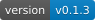
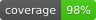

Tool
badge
Turns a label, a message, and a colour into a shields-style flat badge you commit as offline SVG.
Render a shields-style status badge — a grey label paired with a coloured message — as an offline SVG committed straight into the repo, with no network round-trip to shields.io. Reach for this whenever a task calls for a README, docs, or release-note status badge (build passing, version, coverage, license) and the badge should live in git rather than hot-linking an external service. Never a slash command; use it implicitly when the intent calls for one.
What it does
badge renders the classic two-segment flat status badge — a grey left segment carrying a label, a coloured right segment carrying a message — straight to an SVG file. It is pure standard library: no dependencies and no network, so there is no round-trip to shields.io and the badge renders forever, offline, and diffs cleanly in git. Output is deterministic, so the same arguments always produce byte-for-byte the same file.
It is a tool, not a command: you never type it. The crew reach for it on their own when the natural artifact of a task is a small status badge — build passing, a version tag, a coverage number, a licence — for a README, a docs page, or a release note, and that badge should live in the repo rather than hot-linking an external service. Colours are a named palette (green, blue, red, brightgreen, orange, yellow, ...) or any #rrggbb hex value, and segment widths are sized from a baked DejaVu Sans width table and locked with SVG textLength so text is never clipped.
Examples
A few things badge can produce, each from a small spec of its own.


How the crew reach for it
Tools ship with a plain install; refresh one with shipmates install --harness <name> --with-tools badge. Use --with-tools none for crew-only. Once installed it sits alongside the crew as a capability they invoke implicitly; there is no slash command to type.
The renderer and its instructions are bundled together, so wherever the tool lands the agent has both the badge.py script and the CLI it needs to drive it: python3 badge.py --label build --message passing --color green --out badge.svg (or omit --out to write the SVG to stdout).
Reference
- Name
badge- Description
- Render a shields-style status badge — a grey label paired with a coloured message — as an offline SVG committed straight into the repo, with no network round-trip to shields.io. Reach for this whenever a task calls for a README, docs, or release-note status badge (build passing, version, coverage, license) and the badge should live in git rather than hot-linking an external service. Never a slash command; use it implicitly when the intent calls for one.
- Bundled files
badge.py- Install
shipmates install --harness <name> --with-tools badge
Where this lives
This page is generated from toolbox/badge/tool.md. Opt in at install with --with-tools badge and the installer copies the tool — instructions and bundled files — into the harness's skills tree.